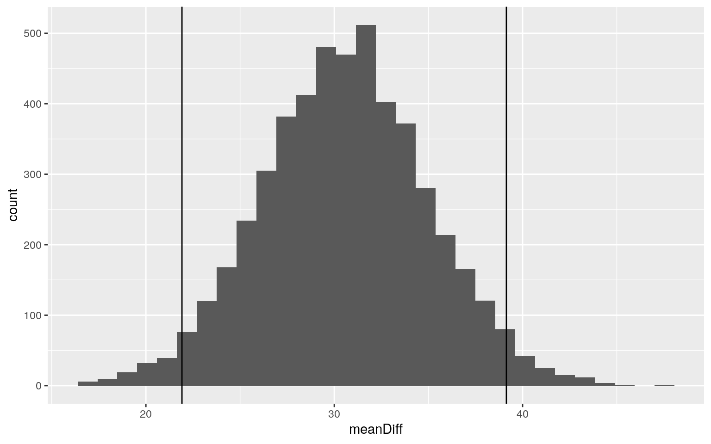

strokedat<-read_csv("healthcare-dataset-stroke-data.csv")
strokedat[strokedat == "N/A"] <- NA
strokedat<- strokedat %>% na.omit()
head(strokedat)## # A tibble: 6 x 12
## id gender age hypertension heart_disease ever_married
work_type Residence_type
## <dbl> <chr> <dbl> <dbl> <dbl> <chr> <chr> <chr>
## 1 9046 Male 67 0 1 Yes Private Urban
## 2 31112 Male 80 0 1 Yes Private Rural
## 3 60182 Female 49 0 0 Yes Private Urban
## 4 1665 Female 79 1 0 Yes Self-emp… Rural
## 5 56669 Male 81 0 0 Yes Private Urban
## 6 53882 Male 74 1 1 Yes Private Rural
## # … with 4 more variables: avg_glucose_level <dbl>, bmi
<chr>, smoking_status <chr>, stroke <dbl>This Project is going to be using a dataset that attempts to predict how likely a patient is to have a stroke based on various conditions/variables. This includes the following: gender, age, hypertension, marriage status, work status, residence type, average glucose level, BMI, smoking status, and stroke status. However, though the dataset is based on at-risk individuals for strokes, the conditions of hypertension and heart disease were recorded as well. There are 4909 entries with NAs removed.
library(rstatix)
library(tidyverse)
library(dplyr)
strokedat$bmi <- as.numeric(as.character(strokedat$bmi))
#MANOVA with smoking status
man1<-manova(cbind(age,bmi,hypertension,heart_disease,avg_glucose_level,stroke)~smoking_status, data=strokedat)
summary(man1)## Df Pillai approx F num Df den Df Pr(>F)
## smoking_status 3 0.19705 57.437 18 14706 < 2.2e-16 ***
## Residuals 4905
## ---
## Signif. codes: 0 '***' 0.001 '**' 0.01 '*' 0.05 '.' 0.1
' ' 1#6 ANOVAs
summary.aov(man1)## Response age :
## Df Sum Sq Mean Sq F value Pr(>F)
## smoking_status 3 422738 140913 333.24 < 2.2e-16 ***
## Residuals 4905 2074125 423
## ---
## Signif. codes: 0 '***' 0.001 '**' 0.01 '*' 0.05 '.' 0.1
' ' 1
##
## Response bmi :
## Df Sum Sq Mean Sq F value Pr(>F)
## smoking_status 3 22524 7508.0 131.41 < 2.2e-16 ***
## Residuals 4905 280233 57.1
## ---
## Signif. codes: 0 '***' 0.001 '**' 0.01 '*' 0.05 '.' 0.1
' ' 1
##
## Response hypertension :
## Df Sum Sq Mean Sq F value Pr(>F)
## smoking_status 3 8.58 2.86153 35.004 < 2.2e-16 ***
## Residuals 4905 400.98 0.08175
## ---
## Signif. codes: 0 '***' 0.001 '**' 0.01 '*' 0.05 '.' 0.1
' ' 1
##
## Response heart_disease :
## Df Sum Sq Mean Sq F value Pr(>F)
## smoking_status 3 2.396 0.79859 17.137 4.548e-11 ***
## Residuals 4905 228.575 0.04660
## ---
## Signif. codes: 0 '***' 0.001 '**' 0.01 '*' 0.05 '.' 0.1
' ' 1
##
## Response avg_glucose_level :
## Df Sum Sq Mean Sq F value Pr(>F)
## smoking_status 3 123526 41175 21.12 1.368e-13 ***
## Residuals 4905 9562520 1950
## ---
## Signif. codes: 0 '***' 0.001 '**' 0.01 '*' 0.05 '.' 0.1
' ' 1
##
## Response stroke :
## Df Sum Sq Mean Sq F value Pr(>F)
## smoking_status 3 1.424 0.47479 11.722 1.193e-07 ***
## Residuals 4905 198.677 0.04051
## ---
## Signif. codes: 0 '***' 0.001 '**' 0.01 '*' 0.05 '.' 0.1
' ' 1#36 Pairwise t-tests
pairwise.t.test(strokedat$age,strokedat$smoking_status, p.adj="none")##
## Pairwise comparisons using t tests with pooled SD
##
## data: strokedat$age and strokedat$smoking_status
##
## formerly smoked never smoked smokes
## never smoked < 2e-16 - -
## smokes 2.6e-14 0.56 -
## Unknown < 2e-16 < 2e-16 < 2e-16
##
## P value adjustment method: nonepairwise.t.test(strokedat$bmi,strokedat$smoking_status, p.adj="none")##
## Pairwise comparisons using t tests with pooled SD
##
## data: strokedat$bmi and strokedat$smoking_status
##
## formerly smoked never smoked smokes
## never smoked 0.015 - -
## smokes 0.594 0.088 -
## Unknown <2e-16 <2e-16 <2e-16
##
## P value adjustment method: nonepairwise.t.test(strokedat$heart_disease,strokedat$smoking_status, p.adj="none")##
## Pairwise comparisons using t tests with pooled SD
##
## data: strokedat$heart_disease and
strokedat$smoking_status
##
## formerly smoked never smoked smokes
## never smoked 9.3e-06 - -
## smokes 0.409 0.001 -
## Unknown 3.5e-10 0.013 3.4e-07
##
## P value adjustment method: nonepairwise.t.test(strokedat$hypertension,strokedat$smoking_status, p.adj="none")##
## Pairwise comparisons using t tests with pooled SD
##
## data: strokedat$hypertension and
strokedat$smoking_status
##
## formerly smoked never smoked smokes
## never smoked 0.21 - -
## smokes 0.16 0.67 -
## Unknown < 2e-16 < 2e-16 1.9e-10
##
## P value adjustment method: nonepairwise.t.test(strokedat$avg_glucose_level,strokedat$smoking_status, p.adj="none")##
## Pairwise comparisons using t tests with pooled SD
##
## data: strokedat$avg_glucose_level and
strokedat$smoking_status
##
## formerly smoked never smoked smokes
## never smoked 0.0031 - -
## smokes 0.0061 0.7273 -
## Unknown 1.0e-13 1.1e-08 4.5e-05
##
## P value adjustment method: nonepairwise.t.test(strokedat$stroke,strokedat$smoking_status, p.adj="none")##
## Pairwise comparisons using t tests with pooled SD
##
## data: strokedat$stroke and strokedat$smoking_status
##
## formerly smoked never smoked smokes
## never smoked 0.00668 - -
## smokes 0.13537 0.38840 -
## Unknown 2.5e-08 0.00024 0.00024
##
## P value adjustment method: none#Overall Type I Error Rate
1-.95^43## [1] 0.8898169#Bonferroni Adjustment
.05/43## [1] 0.001162791To begin, I decided to conduct a MANOVA on smoking status with my numeric predictors because I felt it would be interesting to see if some health statistics are correlated with smoking habits, especially strokes. The results of the MANOVA show that there is a mean difference in at least one of our numeric variables across smoker status (p < 0.05). I then conducted 6 ANOVAs on my numeric variables and find that all of them show a mean difference across groups with their extremely small p-values. I then conducted individual post-hoc t-tests for each numeric variable (36 total). With this many tests, there is an 88.98% chance that we have a Type I error when unadjusted (which is very high and not good)! Conducting a bonferroni adjustment based on the amount of tests reveals the corrected threshold for significance at a value of 0.00116. When adjusted for, there are 21 significant comparisons. 17 of them are the comparisons between the “Unknown” smoking status and the other 3 categories. This makes sense because it is more than likely that this group is just a mixed bag of anyone as at the time of data collection, this question may not have been asked of the patient. I do believe that most of the assumptions for MANOVA were met as this dataset is massive with thousands of samples. However, I fear there could be a few outliers in this dataset, which MANOVA is sensitive to. It is possible for that assumption to be violated since in the world of medicine, unusual patients are not uncommon.
strokedat<- strokedat %>% mutate(strokeNB = replace(stroke, stroke == 1, "YES"))
strokedat$strokeNB[strokedat$strokeNB == 0] <- "NO"
#Mean Difference randomization test
means<-vector()
means2<-vector()
for(i in 1:5000){
samp<-sample(strokedat[strokedat$strokeNB=="YES",]$avg_glucose_level,replace=T)
means[i]<-mean(samp)
samp2<-sample(strokedat[strokedat$strokeNB=="NO",]$avg_glucose_level,replace=T)
means2[i]<-mean(samp2)
}
#Save the meanDiff
meanDiff<-means-means2
quantile(meanDiff,c(.025, .975))## 2.5% 97.5%
## 22.15751 39.26684#Verified with an Independent t-test
t.test(strokedat[strokedat$strokeNB=="YES",]$avg_glucose_level, strokedat[strokedat$strokeNB=="NO",]$avg_glucose_level, var.equal = F)##
## Welch Two Sample t-test
##
## data: strokedat[strokedat$strokeNB == "YES",
]$avg_glucose_level and strokedat[strokedat$strokeNB ==
"NO", ]$avg_glucose_level
## t = 7.0015, df = 216.85, p-value = 3.128e-11
## alternative hypothesis: true difference in means is not
equal to 0
## 95 percent confidence interval:
## 21.96267 39.17263
## sample estimates:
## mean of x mean of y
## 134.5714 104.0037#Plotted null distribution with the upper and lower cutoffs
ggplot()+geom_histogram(aes(meanDiff))+geom_vline(xintercept=quantile(meanDiff,c(.025,.975))) I conducted a randomization test on the mean difference for average glucose levels between patients who did or did not have a stroke. The null hypothesis is that the mean average glucose levels are the same across both patients who did or did not have a stroke while the alternative is that the levels do differ. After completing the test, it seems that 95% of average glucose levels between patients who did or did not have a stroke have a mean difference between 22.28 and 29.13 mmol/L. The significance of this was verified by a t-test, which has a significant p-value of 3.13E-11.
library(lmtest)
library(sandwich)
#Centering Numerics
strokedat$agecent <- strokedat$age - mean(strokedat$age, na.rm = T)
strokedat$glucent <- strokedat$avg_glucose_level - mean(strokedat$avg_glucose_level, na.rm = T)
#Linear Regression. Centered Age and Avg. Glucose effects on BMI
fit1<-lm(data =strokedat, bmi~agecent*glucent)
summary(fit1)##
## Call:
## lm(formula = bmi ~ agecent * glucent, data = strokedat)
##
## Residuals:
## Min 1Q Median 3Q Max
## -21.211 -5.018 -1.387 3.494 72.665
##
## Coefficients:
## Estimate Std. Error t value Pr(>|t|)
## (Intercept) 28.9613376 0.1089284 265.875 < 2e-16 ***
## agecent 0.1064556 0.0048212 22.081 < 2e-16 ***
## glucent 0.0217205 0.0028662 7.578 4.17e-14 ***
## agecent:glucent -0.0002882 0.0001217 -2.368 0.0179 *
## ---
## Signif. codes: 0 '***' 0.001 '**' 0.01 '*' 0.05 '.' 0.1
' ' 1
##
## Residual standard error: 7.361 on 4905 degrees of
freedom
## Multiple R-squared: 0.1221, Adjusted R-squared: 0.1216
## F-statistic: 227.4 on 3 and 4905 DF, p-value: < 2.2e-16#Regression Plot
ggplot(strokedat, aes(age, avg_glucose_level)) + geom_point() + geom_smooth(method="lm")resids<-fit1$residuals
fitvals<-fit1$fitted.values
#Linearity/Homoskedasticity
ggplot()+geom_point(aes(fitvals,resids))+geom_hline(yintercept=0, color='red')#Normality
shapiro.test(resids)##
## Shapiro-Wilk normality test
##
## data: resids
## W = 0.91984, p-value < 2.2e-16#Robust Standard Errors
coeftest(fit1, vcov=vcovHC(fit1))##
## t test of coefficients:
##
## Estimate Std. Error t value Pr(>|t|)
## (Intercept) 28.96133764 0.10886094 266.0398 < 2.2e-16
***
## agecent 0.10645563 0.00446344 23.8506 < 2.2e-16 ***
## glucent 0.02172050 0.00326124 6.6602 3.035e-11 ***
## agecent:glucent -0.00028824 0.00012429 -2.3191 0.02043 *
## ---
## Signif. codes: 0 '***' 0.001 '**' 0.01 '*' 0.05 '.' 0.1
' ' 1Here, I decided to run a linear regression on bmi to see if centered age and average glucose significantly affect it in patients. When running the summary on the model, every year increase in age increases bmi by 0.106 kg/m2, every 1 mmol/L increase in average glucose level increases bmi by 0.022 kg/m2, and every one unit increase in the interaction of age and average glucose decreases bmi by 0.0003 kg/m2. The model explains a proportion of 0.1216 variation in the outcome. In regards to assumptions, visually, it appears that linearity and homoskedacity are okay. However, normality is violated due results from the Shapiro-Wilk test (p < 0.05). With robust standard errors, all predictors are still significant, showing no change from the original linear regression model. This is expected since the original model cleared the homoskedacity assumption.
samp_distn<-replicate(5000, {
boot_dat <- sample_frac(strokedat, replace=T)
fit3 <- lm(bmi~agecent*glucent, data=boot_dat)
coef(fit3)
})
## Estimated SEs
samp_distn %>% t %>% as.data.frame %>% summarize_all(sd)## (Intercept) agecent glucent agecent:glucent
## 1 0.1096262 0.004480934 0.003294629 0.0001234474#Non-Bootstrapped SE
summary(fit1)$coef[,1:2]## Estimate Std. Error
## (Intercept) 28.9613376429 0.1089283598
## agecent 0.1064556301 0.0048211781
## glucent 0.0217204954 0.0028662177
## agecent:glucent -0.0002882439 0.0001217134bptest(fit1)##
## studentized Breusch-Pagan test
##
## data: fit1
## BP = 3.1282, df = 3, p-value = 0.3723When comparing the results of the bootstrapped standard errors to the original model, they are incredibly similar to one another. The p-value that assesses for homoskedacity in the original model is quite large (0.3723) as well as the one for normality being very, VERY small (p < 0.05, normality violated by Shapiro-Wilk test in previous section). Because of the close similarity in both the original and bootstraped SEs, it is fair to assume that the p-values for the bootstrapped model will also be close to what was calculated originally.
#Logistic Regession
fit2<-glm(stroke~avg_glucose_level+age,data=strokedat,family=binomial(link="logit"))
#Coefficient Estimates Exponentiated
exp(coef(fit2))## (Intercept) avg_glucose_level age
## 0.0003843905 1.0056123437 1.0744791318#Classification Diagnostics
prob<-predict(fit2,type="response")
class_diag(prob,strokedat$stroke)## acc sens spec ppv auc
## 1 0.9574251 0 1 NaN 0.8447903#Confusion Matrix
table(predict=as.numeric(prob>.5),truth=strokedat$stroke)%>%addmargins## truth
## predict 0 1 Sum
## 0 4700 209 4909
## Sum 4700 209 4909#Density Plot of log-odds
strokedat$logit<-predict(fit2)
strokedat$outcome<-factor(strokedat$strokeNB,levels=c("YES","NO"))
ggplot(strokedat,aes(logit, fill=outcome))+geom_density(alpha=.3)+
geom_vline(xintercept=0,lty=2)#ROC Curve
library(plotROC)
ROCplot<-ggplot(strokedat)+geom_roc(aes(d=outcome,m=prob), n.cuts=0)
ROCplot#AUC
calc_auc(ROCplot)## PANEL group AUC
## 1 1 -1 0.8447933For my logistic regression, I now attempted to predict strokes from some other predictors in the dataset: average glucose level and age. When fitted, the exponentiated coefficients tell us that for every unit increase of glucose level (mmol/L) and age (year), the odds of a stroke increase by 0.561% and 7.45%, respectively. Upon calculating the classification diagnostics for this model, we have an overall accuracy of 0.95, sensitivity of 0, specificity of 1, precision of NaN, and AUC of 0.84. I know what you’re thinking: Sensitivity, specificity, and precision all seem a little weird. However, this makes sense in the model due to the vast majority of entries not being afflicted from a stroke. About 200 of the roughly 4900 have experienced a stroke before, so it is possible that in this dataset that strokes cannot be predicted from age and glucose level well enough on their own. Our model is also pretty good from having a decently high AUC value as well. Verified with a ROC plot, our AUC is the same at 0.84.
strokeclean <- strokedat[,c(2:12)]
head(strokeclean)## # A tibble: 6 x 11
## gender age hypertension heart_disease ever_married
work_type Residence_type avg_glucose_lev…
## <chr> <dbl> <dbl> <dbl> <chr> <chr> <chr> <dbl>
## 1 Male 67 0 1 Yes Private Urban 229.
## 2 Male 80 0 1 Yes Private Rural 106.
## 3 Female 49 0 0 Yes Private Urban 171.
## 4 Female 79 1 0 Yes Self-emp… Rural 174.
## 5 Male 81 0 0 Yes Private Urban 186.
## 6 Male 74 1 1 Yes Private Rural 70.1
## # … with 3 more variables: bmi <dbl>, smoking_status
<chr>, stroke <dbl>#Logisitic Regression featuring the rest of the available predictors
fit4<-glm(stroke~.,data=strokeclean,family=binomial(link="logit"))
prob2<-predict(fit4,type="response")
#Classification Diagnostics
class_diag(prob2,strokedat$stroke)## acc sens spec ppv auc
## 1 0.9574251 0.004784689 0.9997872 0.5 0.852712#10-fold CV
k=10
data <- strokeclean %>% sample_frac
folds <- ntile(1:nrow(data),n=10)
diags<-NULL
for(i in 1:k){
train <- data[folds!=i,]
test <- data[folds==i,]
truth <- test$stroke
fit5 <- glm(stroke~., data=strokeclean, family="binomial")
probs <- predict(fit5, newdata=test, type="response")
diags<-rbind(diags,class_diag(probs,truth))
}
#Classification Diagnostics for 10-fold CV
summarize_all(diags,mean)## acc sens spec ppv auc
## 1 0.9574263 0.003448276 0.9997895 NaN 0.8515516library(glmnet)
#LASSO
y<-as.matrix(strokeclean$stroke)
x<-model.matrix(stroke~.,data=strokeclean)[,-1]
cv<-cv.glmnet(x,y,family="binomial")
lasso<-glmnet(x,y,family="binomial",lambda=cv$lambda.1se)
coef(lasso)## 17 x 1 sparse Matrix of class "dgCMatrix"
## s0
## (Intercept) -5.292370037
## genderMale .
## genderOther .
## age 0.038162880
## hypertension 0.183911968
## heart_disease 0.109619300
## ever_marriedYes .
## work_typeGovt_job .
## work_typeNever_worked .
## work_typePrivate .
## work_typeSelf-employed .
## Residence_typeUrban .
## avg_glucose_level 0.001648935
## bmi .
## smoking_statusnever smoked .
## smoking_statussmokes .
## smoking_statusUnknown .#10-fold CV with LASSO selected variables
k=10
data <- strokeclean %>% sample_frac
folds <- ntile(1:nrow(data),n=10)
diags<-NULL
for(i in 1:k){
train <- data[folds!=i,]
test <- data[folds==i,]
truth <- test$stroke
fit5 <- glm(stroke~age+hypertension+heart_disease+avg_glucose_level, data=strokeclean, family="binomial")
probs <- predict(fit5, newdata=test, type="response")
diags<-rbind(diags,class_diag(probs,truth))
}
#Classification Diagnostics for LASSO 10-fold CV
summarize_all(diags,mean)## acc sens spec ppv auc
## 1 0.9574276 0 1 NaN 0.8468844In the final logistic regression, I am now using 10 predictors from the dataset to see if they significantly predict the occurrence of strokes. With this set of classification diagnostics, we have a fairly similar accuracy and AUC (0.85) to last model. However, the sensitivity and specificity changed ever so slightly from 0 and 1, respectively. Precision now has a value of 0.5, meaning that R believes that now at least half of the patients who have had strokes were predicted correctly from the model. Unlike the previous model, now having the rest of the available predictors helped in predicting strokes more effectively, even if the change overall is minuscule. Performing a 10-fold CV gives an AUC of 0.86, which is quite close to the original model. After conducting a LASSO, the non-zero variables we will retain for the final, lasso-selected CV are: age, hypertension, heart disease, and average glucose level. From the lasso-selected CV, a similar, good AUC value is computed like the previous logistic regressions above: 0.85.